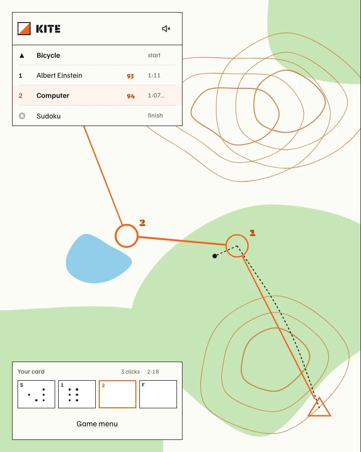

KITE
Race through Wikipedia,
checkpoint to checkpoint.
Get from the start to the finish using only
the links inside each article. Fewest clicks wins.

Get from the start to the finish using only
the links inside each article. Fewest clicks wins.
